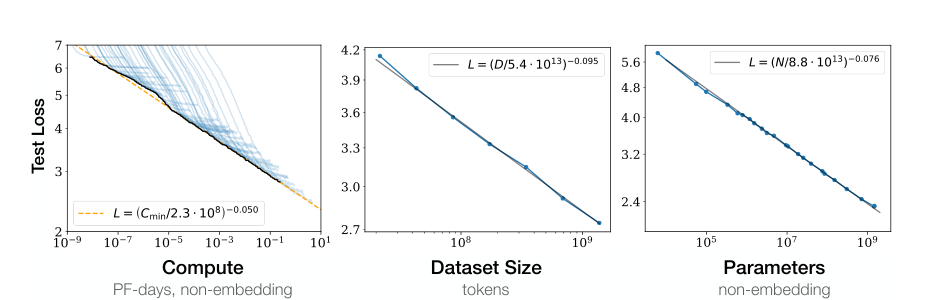
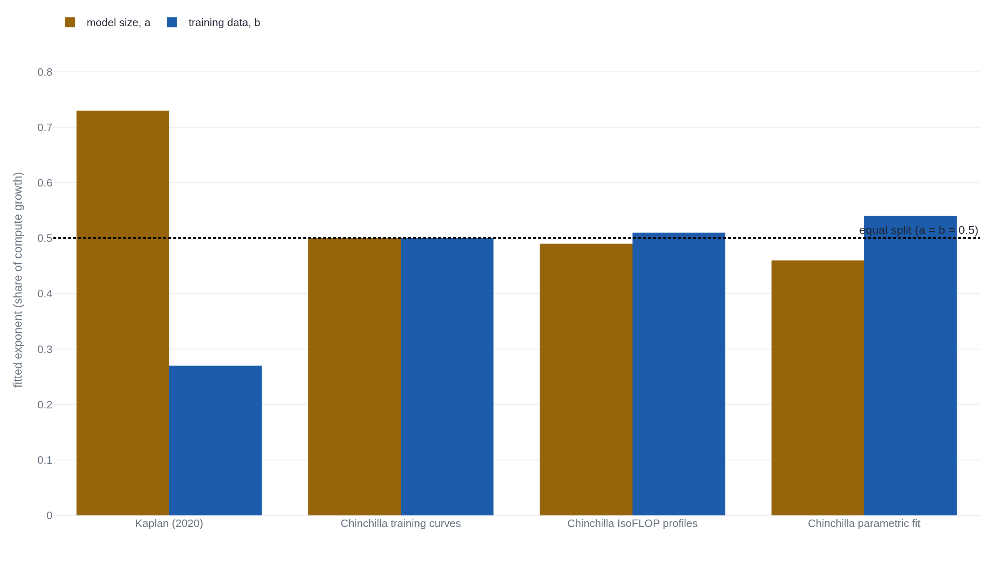

OpenAI's 2020 scaling paper got the curve right and the budget wrong
DeepMind's 2022 Chinchilla paper retrained the same comparison and found the right split was close to even, not Kaplan's five-to-two tilt toward model size.
Why this matters
Every large language model built since 2020 exists because of one idea. A model's loss, how wrong its next-word guesses are, gets better in a predictable way as you make it bigger, feed it more text, and spend more compute training it. That idea has a source, a single OpenAI paper that fit the curve and then told engineers exactly how to spend a compute budget to ride it. The curve held. The spending advice didn't, and a different lab caught the error two years later by finding the specific flaw in how the first paper measured its own models. This lesson walks through what the paper actually measured, what it told engineers to do with that measurement, and exactly which part of that advice broke and why.
- 01
- Chinchilla beat a model four times its size on the same compute: the full derivation of the ~20-tokens-per-parameter rule this lesson's correction leads to, not repeated here.
- 02
- Few-shot GPT-3 beat fine-tuning on a handful of tasks and trailed it on most: the model this paper's advice was used to build, months after it was published.
The three curves that never bent
In January 2020, four months before GPT-3 existed, ten researchers at OpenAI led by Jared Kaplan and Sam McCandlish published "Scaling Laws for Neural Language Models."1 They trained several hundred Transformer language models, sized from 768 up to 1.5 billion parameters. For each run they recorded one number: loss, how far off the model's predicted next word was from the actual one, averaged over held-out text it never trained on.1 Then they plotted that loss against three quantities: how big the model was (N, its parameter count), how much text it trained on (D, in tokens), and how much computation the training run took (C).
All three plots came out as power laws: on a log-log chart, each one is a straight line, meaning loss falls by a fixed fraction every time the quantity on the x-axis multiplies by a fixed factor, however far you zoom out. Kaplan's team fit those lines across a genuinely wide range and reported, in their own words, "no signs of deviation from these trends on the upper end."1 The relationships held "across eight orders of magnitude in Cmin, six orders of magnitude in N, and over two orders of magnitude in D."1

Nothing in the record checked for this lesson disputes that finding. It is why the field kept buying scale after 2020: if loss keeps falling in a straight line as you spend more, the rational move is to keep spending. But a straight line only tells you that bigger is better. It does not tell you how to split a fixed budget between a bigger model and more training data, and Kaplan's paper did not stop at the curve. It answered that question too, and the answer is where the trouble starts.
Grow the model five times faster than the data
Kaplan's team fit a second pair of power laws for the optimal split of a fixed compute budget C. The question was how large the model N should be, and how much data D it should see, to reach the lowest loss for that budget. They found N growing almost in step with C, and D growing far slower: N ∝ C0.73, D ∝ C0.27.1 Run the arithmetic on those two exponents and a tenfold increase in compute should go mostly into the model.
The paper's own words for what that implies are direct: "optimally compute-efficient training involves training very large models on a relatively modest amount of data and stopping significantly before convergence."1 Convergence is the point where more training on the same data stops helping. Kaplan's advice was to never get there: build the model big, feed it comparatively little, and quit early. The paper's discussion section states the conclusion as plainly as a scaling paper gets: "Big models may be more important than big data."1
The advice did not sit in a journal. Kaplan is a co-author of "Language Models are Few-Shot Learners," the paper that introduced GPT-3 four months later. Its acknowledgments credit Kaplan and McCandlish with having "initially predicted that a giant language model should show continued gains" and with applying "scaling laws to help predict and guide model and data scaling decisions for the research."2 GPT-3 shipped at 175 billion parameters trained on 300 billion tokens, about 1.7 tokens for every parameter, a training run built the way the scaling-laws paper said to build one.2
Kaplan's own team flagged the limits of the fit this advice rested on. An appendix titled "Caveats" says the group "did not thoroughly investigate the small data regime," that their fits "were poor for the smallest values of D," and that "at present we do not have a solid theoretical understanding for any of our proposed scaling laws."1
Two years later, the split flipped to even
In March 2022 a DeepMind team led by Jordan Hoffmann, with no author in common with Kaplan's paper, reran the same question: for a fixed compute budget C, how should the optimal model size N and token count D scale?3 They trained more than 400 models, from 70 million to over 16 billion parameters. They fit the split three separate ways: reading the minimum off each training curve, holding compute fixed and varying model size, and fitting one parametric surface to every run.3 All three methods landed close to N ∝ C0.50, D ∝ C0.50: an even split, not Kaplan's lopsided one.

Hoffmann's team named the reason for the gap. Kaplan's runs shared one learning-rate schedule, the rule that shrinks each training step's size over the course of a run, typically decaying toward zero near the end, sized for a long run regardless of how long any given model actually trained. As Hoffmann's paper puts it: "the authors use a fixed number of training tokens and learning rate schedule for all models; this prevents them from modelling the impact of these hyperparameters on the loss... the intermediate loss estimates... are therefore overestimates of the loss of a model trained with a schedule length matching" its actual data budget.3 A model stopped early was measured mid-decay, against a schedule tuned for a run it never finished, so its recorded loss looked worse than a model properly trained for that shorter length would have scored. Put plainly: Kaplan's team read each shorter run's loss off a point partway down a longer run's schedule, rather than training a separate run that actually finished on that shorter budget. At the point being measured, "the learning rate schedule has not fully decayed."4 Read across many model sizes, that overstatement tilted the fitted optimum toward bigger models and less data, in the same direction Kaplan's paper found. Chinchilla's models also sat at a different scale: the majority of Kaplan's runs were under 100 million parameters, against over 500 million for most of Chinchilla's.3
This does not contradict what Kaplan's own paper says about learning rates. Section 2.2 reports that the team "experimented with a variety of learning rates and schedules" and "found that results at convergence were largely independent of learning rate schedule."1 That is a claim about models trained to convergence under different schedules. Chinchilla's critique is about a different practice: reading intermediate, pre-convergence loss off one shared schedule to compare across model sizes. Kaplan checked for the failure they tested for and did not find it. They did not test for the one that was actually there.
The reversal is checkable directly, not just through refitted exponents. At a fixed budget of 1021 FLOPs, Kaplan's formula recommends a 4.68-billion-parameter model; Chinchilla's recommends 2.86 billion. Hoffmann's team trained both, at 4.74 billion and 2.80 billion parameters, and the smaller one won.3
Two more pieces of evidence
A 2024 paper by Tim Pearce and Jinyeop Song, with no author or institutional tie to either OpenAI or DeepMind, found a second, independent contributor to Kaplan's skew. Kaplan counted only non-embedding parameters, the weights inside a model's transformer layers, leaving out the ones in its word-lookup table. Chinchilla counted every parameter the model had.5 Pearce and Song simulated Chinchilla's own method under Kaplan's original conditions, small scale and non-embedding counts, and it reproduced Kaplan-like biased coefficients on its own, on top of the learning-rate effect. Even a reader who accepts Chinchilla's explanation in full is missing part of the story: the counting convention was never named as a factor in Chinchilla's own paper.
The disagreement over which way to tilt, model or data, also predates Chinchilla by five years. Baidu researchers led by Joel Hestness, unconnected to either later team, published a 2017 study of power-law scaling across translation, vision, speech, and language tasks. They found the opposite lean from Kaplan's: model size scaling sub-linearly with data size, meaning data outpacing the model rather than the reverse.6 Kaplan's own paper names the disagreement in its related-work section without resolving it: "[Hestness et al.] found super-linear scaling of dataset size with model size, whereas we find a sub-linear scaling."1 The grow-the-model conclusion was contested territory before Kaplan ever published it, not a settled consensus that only Chinchilla later broke.
No arXiv errata, published rebuttal, or blog post from Kaplan, McCandlish, or any other 2020-paper author addressing Chinchilla's critique turns up in the public record. That silence is not evidence the authors agree; it only means the correction stands unanswered by them as far as this search reached.
The takeaway
Kaplan's paper made two claims, and they aged differently. The first, that loss falls as a straight line on a log-log chart as you add model size, data, or compute, still describes every large model tested against it since. Nothing in this lesson's sources challenges it, and it is the reason scale became the field's default bet. The second claim, that a compute budget should go roughly five times faster into model size than into data, was specific to how Kaplan's team measured their own models. One learning-rate schedule, sized for long runs, was applied to runs of every length, and model size was counted one particular way. Fix those two choices, and the same kind of budget splits close to even, a reversal Hoffmann's team checked directly by training the two rival model sizes at the same budget and watching the smaller one win. Kaplan's curve is the reason a lab keeps buying scale at all. Kaplan's own arithmetic for spending it, checked against a model actually built and run, was not the reason to spend it that way.
- 01
- Kaplan et al., "Scaling Laws for Neural Language Models" (full text): the paper itself, including the appendices on caveats and the compute-efficient frontier this lesson only summarizes.
- 02
- Hoffmann et al., "Training Compute-Optimal Large Language Models" (full text): Chinchilla's own paper, with the full derivation of all three fitting approaches.
Sources
- arXiv · Kaplan, McCandlish, et al., "Scaling Laws for Neural Language Models" (2020)
- arXiv · Brown, Mann, et al., "Language Models are Few-Shot Learners" (2020)
- arXiv · Hoffmann, Borgeaud, et al., "Training Compute-Optimal Large Language Models" (2022)
- Irhum Shafkat · "Chinchilla" (2023)
- arXiv · Pearce & Song, "Reconciling Kaplan and Chinchilla Scaling Laws" (2024)
- arXiv · Hestness, Narang, et al., "Deep Learning Scaling is Predictable, Empirically" (2017)